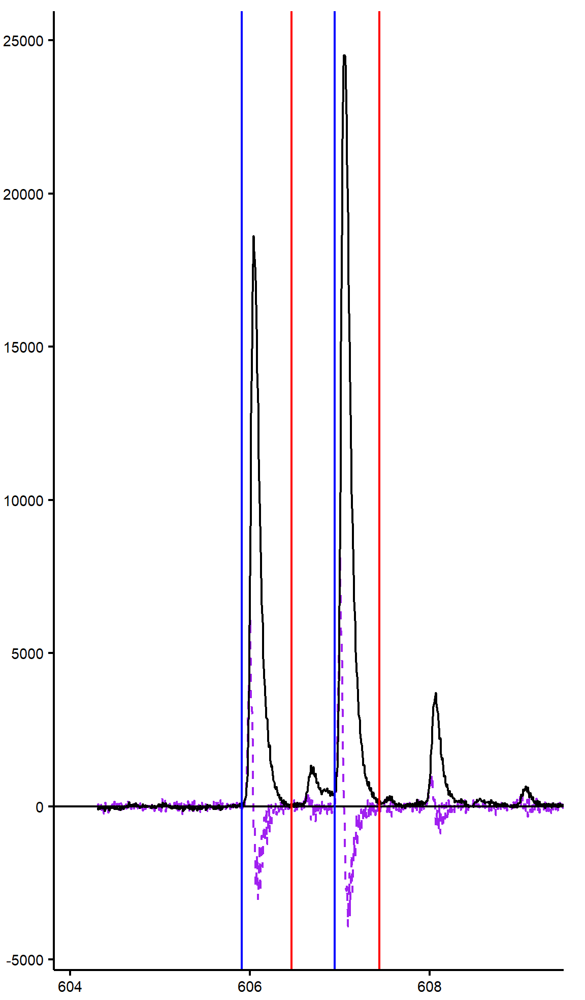
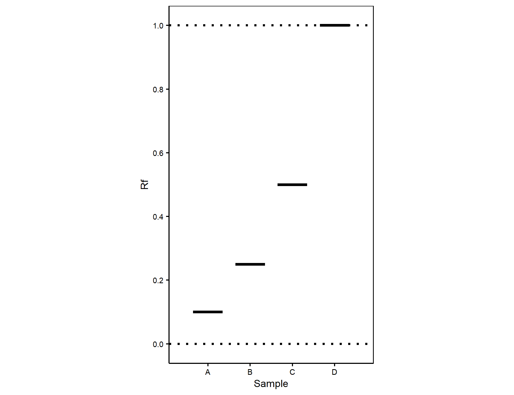

mtbiochem package user guide
Back to downloads.
Changelog
Version 1.5.3
Added tools for automated analysis of mass spectra.
Previous versions
Not documented
Features
documentation and examples for all available functions can be obtained by running "?function" command in an R session with the package loaded.
Enzyme Kinetics
Analysis of enzyme kinetics using the Michaelis-Menten model. Implemented in function "michealis_menten".
Bradford Assay
Automated processing of bradford data by individually fitting each dilution to a local standard curve segment for increased accuracy. Implemented in function "bradford". Standards are included in the package.
Mass Spec Analysis
Batch analysis of mass spectrometry data. Includes loading (from MZXML format), baseline subtraction, integration boundary detection, integration, data aggregation, and quality control tools in the workflow. Implemented in the function "msanalyze".

Plane Chromatography Diagram Tool
Tool for creation of nice diagrams to represent plane or gel chromatography experiments using the ggplot2 package. Implemented in the function "tlcvis".
